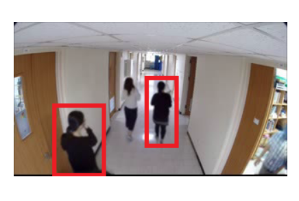

|
Sk. Arif Ahmed, Ph.DPostdoc, Department of Physics and Technology, University of Tromsø, Norway |
 https://orcid.org/0000-0003-0706-2565
https://orcid.org/0000-0003-0706-2565About Me
Arif Ahmed is a Post Doctoral Research Fellow with Krishna Agarwal in the Department of Physics and Technology at the University of Tromsø (UiT), Norway. From 2009 to 2019, he was an Assistant Professor of Computer Application at Haldia Institute of Technology, India. He holds invited position as Research Consultant in Imaging Media Research Center at Korea Institute of Sciece and Technology (KIST), Korea and in School of Electrical Sciences IIT Bhubaneswar, India.
Arif completed his Ph.D. at National Institute of Technology Durgapur, India and his undergraduate studies at Burdwan University. His research interests lie in the area of Computer Vision and Artificial Intelligence, ranging from theory to design to implementation. He has collaborated actively with researchers in several other disciplines of computer science, physics, biology particularly computer vision application on problems at the multi disciplinary environment.
Arif has served on roughly 15 conference and workshop program committees and served as the Organizing Chair for ICITAM 2017, Publication Chair in ICITAM 2019. He has served on the ICMC 2013, 2015, and 2019 as Organizing Member. He is a member of IEEE and Digital Life Norway (DLN).
Arif completed his Ph.D. at National Institute of Technology Durgapur, India and his undergraduate studies at Burdwan University. His research interests lie in the area of Computer Vision and Artificial Intelligence, ranging from theory to design to implementation. He has collaborated actively with researchers in several other disciplines of computer science, physics, biology particularly computer vision application on problems at the multi disciplinary environment.
Arif has served on roughly 15 conference and workshop program committees and served as the Organizing Chair for ICITAM 2017, Publication Chair in ICITAM 2019. He has served on the ICMC 2013, 2015, and 2019 as Organizing Member. He is a member of IEEE and Digital Life Norway (DLN).
Journal Publications
| S Mukherjee, A. Ahmed, D. P. Dogra, S. Kar, P. P. Roy. Fingertip Detection and Tracking for Recognition of Air-Writing in Videos Expert Systems with Applications (2019) [doi] |
|
| A. Ahmed, D. P. Dogra, S. Kar, P. P. Roy. Trajectory-based surveillance analysis: A survey IEEE Transactions on Circuits and Systems for Video Technology (2018) [doi] |
|
| A. Ahmed, D. P. Dogra, S. Kar, R. Patnaik, S. Lee, H. Choi, I. J. Kim. Query-based Video Synopsis for Intelligent Traffic Monitoring Applications. IEEE Transactions on Intelligent Transportation Systems (Accepted) [Demo] |
|
| A. Ahmed, D. P. Dogra, S. Kar, P. P. Roy. Surveillance Scene Representation and Trajectory Anomaly Detection Using Aggregation of Multiple Concepts. Expert Systems with Applications (2018) [doi] |
|
| A. Ahmed, D. P. Dogra, S. Kar, P. P. Roy. Unsupervised Classification of Erroneous Video Object Trajectories. Soft Computing (2017) [doi] |
|
| A. Ahmed, D. P. Dogra, B.Kim, P.Hill, H. Bhaskar, S.Kar. Localization of Region of Interest in Surveillance Scene. Multimedia Tools and Applications (2017) [doi] |
|
| D. P. Dogra, A. Ahmed, H. Bhaskar Smart Video Summarization using Mealy Machine based Trajectory Modelling. Multimedia Tools and Applications (2016) [doi] |
Conference Publications
| A. Ahmed, D. P. Dogra, S. Kar and P. P. Roy Natural language description of surveillance events. ICITAM 2017, HIT, India(Accepted in Advances in Intelligent System and Computing, Springer) [doi] |
|
|  | A. Ahmed, D. P. Dogra, S. Kar, R. Patanaik, H. Choi, I. Kim, S. Lee Video Synopsis Generation Using Spatio-Temporal Groups. IEEE ICSIPA 2017, Malaysia. (In press) [doi] |
| A. Ahmed, D. P. Dogra, S. Kar and P. P. Roy Extraction of Long-duration Moving Object Trajectories from Curtailed Tracks. CVIP-WM 2017, IIT Roorkee, India. (In press) [doi] |
|
| R.Saini, A.Ahmed, D.P. Dogra, P.Roy Classification of Object Trajectories Represented by High-Level Features Using Unsupervised Learning. CVIP 2016, IIT Roorkee, India. [doi] |
|
| R.Saini, A.Ahmed, D.P. Dogra, P.Roy Surveillance Scene Segmentation Based on Trajectory Classification Using Supervised Learning. CVIP 2016, IIT Roorkee, India. [doi] |
|
| D. P. Dogra, A. Ahmed, H. Bhaskar Interest Area Localization using Trajectory Analysis in Surveillance Scenes. VISAPP 2015, Berlin. [doi] |
|
| D. P. Dogra, R. D. Reddy, K.S. Subramanyam, A. Ahmed, H. Bhaskar Scene Representation and Anomalous Activity Detection using Weighted Region Association Graph. VISAPP 2015, Berlin. [doi] |
Professional activities
- Co-Organizer of the International Conference on Information Technology and Applied Mathematics (ICITAM 2017)
- Organizing Member of the International Conference on Mathematics and Computing (ICMC 2017)
- Organizing Member of the International Conference on Mathematics and Computing (ICMC 2015)
- Organizing Member of the International Conference on Mathematics and Computing (ICMC 2013)
Projects
- Person Re-identification for Video Synopsis, Funding Agency: Korea Institute of Science and Technology (KIST), Type: CONSULTANCY PROJECT, Status: Ongoing, Duration: April 2018-December 2018 [Principal Investigator Dr. Debi Prosad Dogra (IIT Bhubneswar)].
- Designing of Video Synopsis Algorithms for Visual Surveillance, Funding Agency: Korea Institute of Science and Technology (KIST), Type: CONSULTANCY PROJECT, Status: Ongoing, Duration: April 2017-June 2018 [Principal Investigator Dr. Debi Prosad Dogra (IIT Bhubneswar)].
- Analysis and Implementation of Non-chronological video synopsis and indexing, Funding Agency: Korea Institute of Science and Technology (KIST) and IKST Bangalore, Type: CONSULTANCY PROJECT: On-going, Duration: Oct 2016-March 2017 [Principal Investigator Dr. Debi Prosad Dogra (IIT Bhubneswar)].